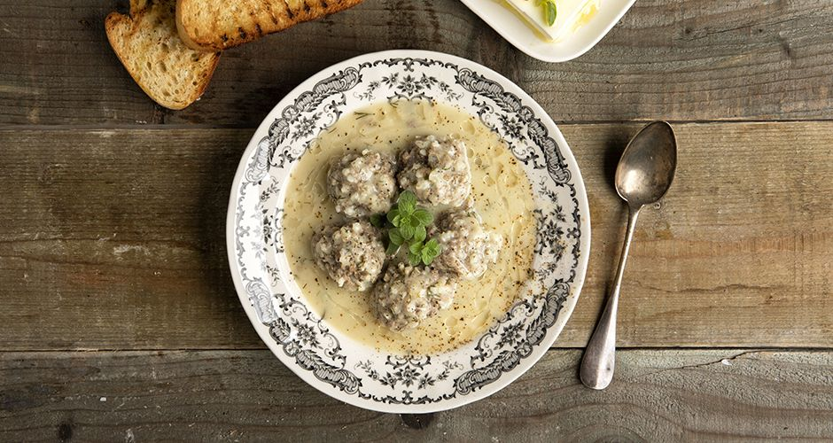

Γιουβαρλάκια αυγολέμονο
Πλήρης συνταγή
Γιουβαρλάκια αυγολέμονο - Άκης

Γρήγορη συνταγή
Υλικά
- 1 κρεμμύδι
- 2 σκελίδες σκόρδο
- 1/2 ματσάκι άνηθο
- 600-700 γρ. κιμά
- 3 αυγά
- ~100 γρ. λάδι
- ~250 γρ. ρύζι γλασσέ
- 3 λεμόνια
- Αλάτι
- Πιπέρι
- Ψωμί ή παξιμάδι
Εκτέλεση
-
Βάλε το κρεμμύδι, το σκόρδο, τον άνηθο στο μπλέντερ.
Βάλε τον κιμά σε ένα μεγάλο μπολ και ρίξε λίγο λάδι,
1 αυγό, 1/2 κούπα ρύζι γλασσέ και τα περιεχόμενα του μπλέντερ.
Πρόσθεσε 2 κ. σ. αλάτι και 1/2 κ. σ. πιπέρι και ανακάτεψε πολύ καλά με
τα χέρια, φορώντας γάντια.
-
Βάλε σε μία πλατιά κατσαρόλα δύο δάχτυλα νερό και άναψε το μάτι σε
μέτρια προς δυνατή ένταση. Πλάσε τα γιουβαρλάκια σε μέγεθος περίπου όσο
όταν ενώσεις τον αντίχειρα με το δείκτη σου κάνοντας ένα Ο, ή λίγο
μικρότερα. Τοποθέτησε τα γιουβαρλάκια ένα ένα στην κατσαρόλα ενώ τα
πλάθεις, και στο τέλος πρόσθεσε νερό μέχρι να σκεπαστούν και λίγο παραπάνω.
Σκέπασε την κατσαρόλα και μόλις αρχίσει να βράζει το νερό, κατέβασε το
μάτι στο μισό. Βράσε τα για περίπου 40 λεπτά, μέχρι να ανοίξει καλά το
ρύζι.
-
Όταν είναι έτοιμα κλείσε το μάτι, κατέβασέ τα από το ζεστό μάτι με ανοιχτό
καπάκι ώστε να πέσει λίγο η θερμοκρασία. Χτύπα καλά 2 αυγά σε ένα μπολ, ρίξε
λίγο αλάτι και λίγο πιπέρι, και στύψε 2 λεμόνια στο μπολ με τα αβγά.
Χτύπα το μίγμα μέχρι να γίνει ομοιογενές. Με την κουτάλα σερβιρίσματος, ρίξε
μισή κουταλιά από τη σούπα στο αυγολέμονο και ανακάτεψε καλά. Επανέλαβε άλλες
τρεις ή τέσσερις φορές. Ρίξε το αυγολέμονο στη σούπα και σύρε κυκλικά την κατσαρόλα
ώστε να απλωθεί το αυγολέμονο. Σέρβιρε με λίγο φρέσκο λάδι, λεμόνι και παξιμάδι ή
ψωμί. Καλή απόλαυση!